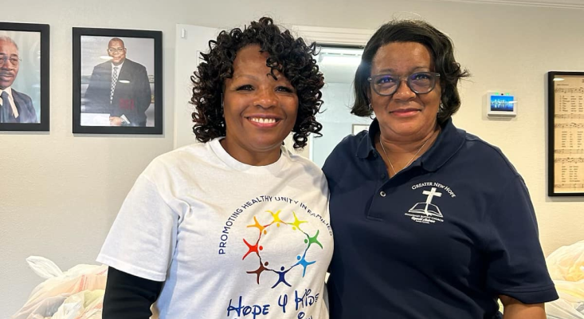
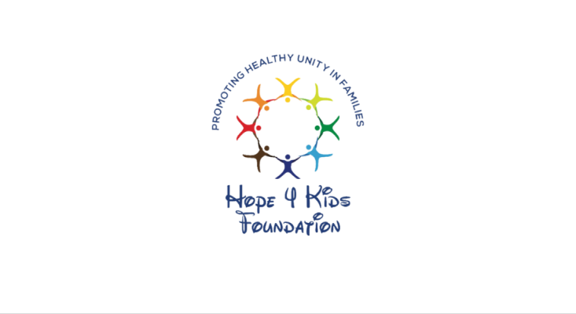
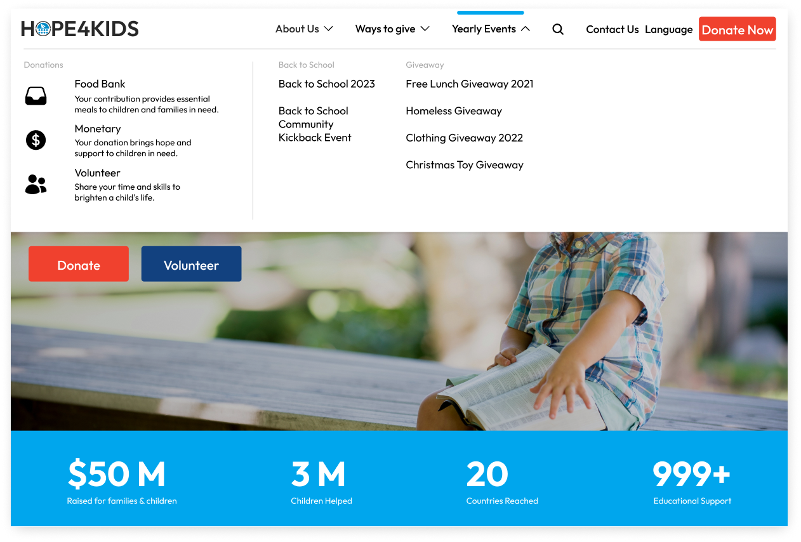
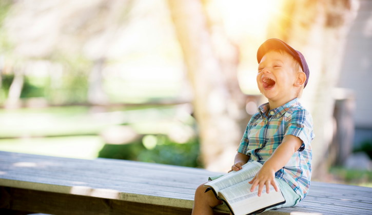
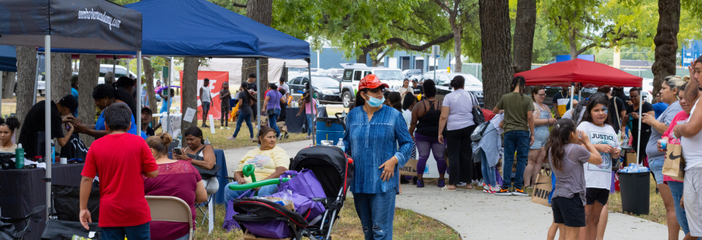
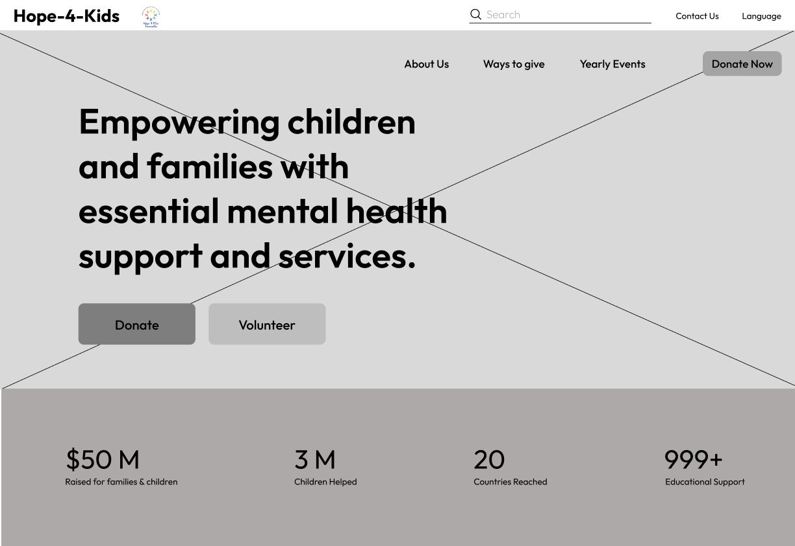
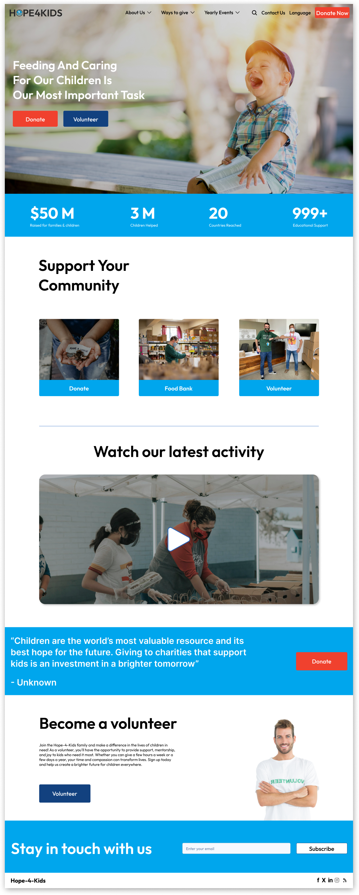
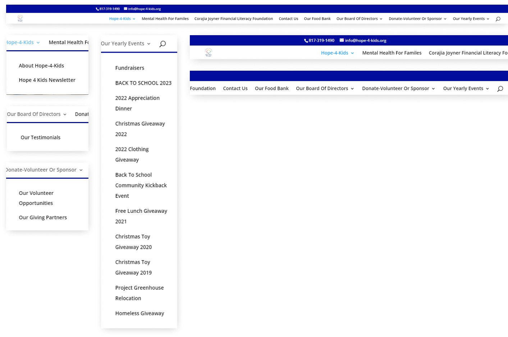
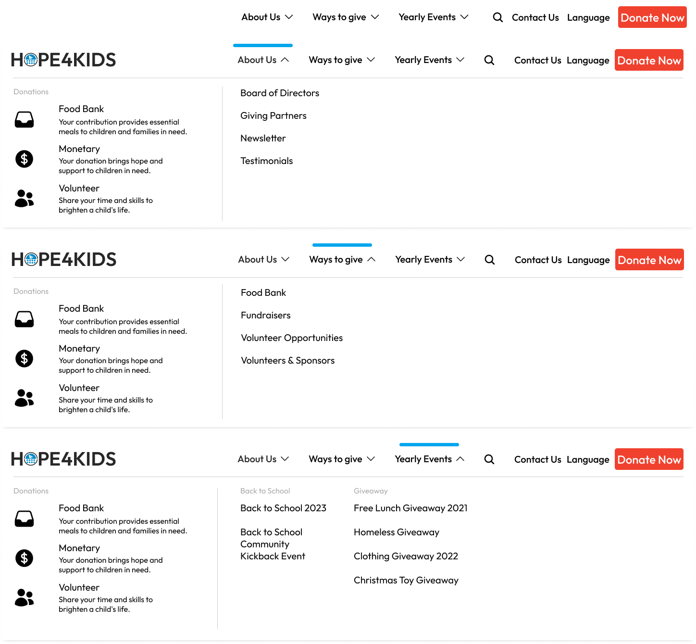
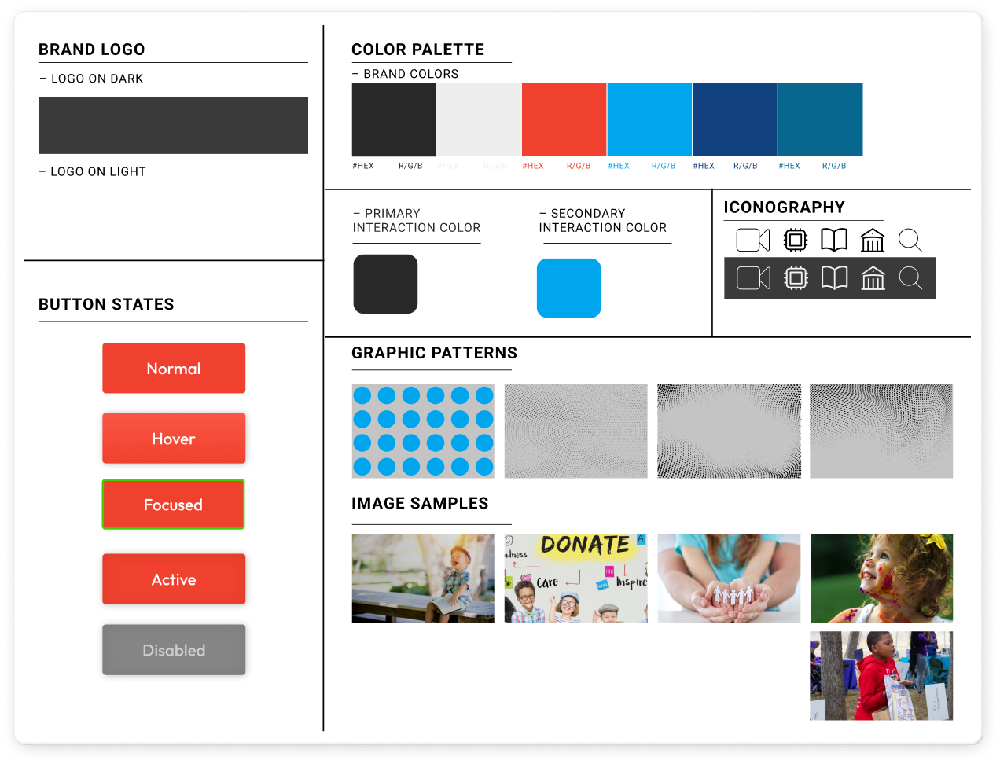

REDESIGNING HOPE-4-KIDS website FOR BETTER ENGAGEMENT & donations
SUMMARY
The Hope-4-Kids website redesign focuses on creating a more engaging and visually cohesive platform to boost traffic, volunteers, and donations. The project aims to enhance user experience and support Hope-4-Kids' mission more effectively.
RESPONSIBILITIES
UI Design
UX Design
Art Direction
Information Architecture
STARTING POINT
At the heart of our journey with Hope-4-Kids.org lies a commitment to enhancing every digital interaction for our community. Our goal? To transform the user interface and experience, unlocking new pathways for engagement, volunteerism, and support. By addressing key design challenges—from visual coherence to intuitive navigation—we're paving the way for a more impactful online presence. Join us as we embark on a collaborative journey, blending creativity with strategy to amplify Hope-4-Kids.org's mission and reach.


BACKGROUND
MEETING THE CHALLENGE:
SCALING VOLUNTEER AND DONATION EFFORTS
We embarked on a website redesign project for the Hope 4 Kids Foundation to enhance their UI/UX and rework their information architecture. The initial website felt crowded and unprofessional, impacting trust and usability. Our goal was to create a more intuitive and professional platform, improving navigation and user experience to increase donations and volunteer engagement effectively.

UX RESEARCH
TALKING WITH VOLUNTEERS & DONATERS
Our UX research began with in-depth interviews with volunteers and donors, revealing crucial insights. Participants emphasized the importance of transparency in understanding where their donations go and how they make an impact. They expressed a desire for the website to clearly communicate these aspects, fostering confidence in the cause and their contributions. Additionally, volunteers highlighted the need for clear guidance on how their efforts contribute to the foundation's mission. These insights guided our approach to redesigning the Hope 4 Kids Foundation website, ensuring it effectively communicates impact and fosters trust and engagement among supporters


UX RESEARCH
MAPPING THE USER EXPERIENCE
Following our interviews with volunteers and donors, we began crafting a user persona to deepen our understanding of their needs. This persona, exemplified by Gabriel Mona, reflects our users' motivations and behaviors. Gabriel is passionate about supporting children in need and seeks transparency and ease of navigation when interacting with charitable organizations.
Using Gabriel's persona as a guide, we mapped out his journey on the redesigned Hope-4-Kids website. We hypothesized that features such as clear information on fund allocation, a comprehensive event calendar, and a virtual assistant for seamless event registration would greatly enhance his experience. These insights were further refined using a feature prioritization matrix to determine which features to implement. Gabriel's hypothetical journey underscores the importance of transparent communication and user-friendly navigation in building confidence among donors and volunteers. Our redesigned platform aims to empower users like Gabriel, enabling them to stay informed and actively contribute to the cause with ease and clarity.

UI DESIGN
FROM VISION TO BLUEPRINT: INITIAL SKETCHES AND WIREFRAMING
In the initial stages, we each worked individually to create sketches for the website layout. To refine our ideas, we conducted an A/B testing activity, followed by usability tests to determine the most effective design. Ultimately, we combined elements from our initial sketches, integrating the best aspects into a cohesive and user-friendly final layout. This collaborative process ensured a well-rounded and efficient design, tailored to meet the needs of our users.

UI DESIGN
Streamlining Navigation:
Redefining Information Architecture
To improve the website’s information architecture, we conducted a card sorting activity. This exercise allowed us to understand how users categorize and prioritize content. As a result, we streamlined the navigation by eliminating over seven unnecessary pages and reorganized the remaining content into a more intuitive structure. This process significantly enhanced usability, ensuring that the navigation makes sense and allows users to find information quickly and efficiently.
BEFORE

AFTER

UI DESIGN
Crafting the Visual Identity:
Developing the UI Style Tile
When defining the visual identity of the Hope 4 Kids Foundation website, we created a comprehensive UI style tile. This style tile served as a blueprint for our design, showcasing key elements such as the brand logo on different color backgrounds, the color palette, button states, iconography, graphic patterns, and image samples. We carefully selected a primary blue color (#00A6ED) to evoke a sense of trust and calmness, aligning with the foundation's mission. By standardizing these visual components, we ensured a cohesive and professional look across the website, enhancing the overall user experience.

IN THE FUTURE
Our redesign of the Hope 4 Kids Foundation website includes a mobile-friendly layout, ensuring accessibility and usability across all devices. Moving forward, we are committed to iterating on the design based on user feedback and evolving needs. Despite an initial setback in outreach, we are determined to re-engage with the foundation to bring this project to fruition. Our goal is to transition to the development stage as soon as possible, transforming our design into a functional, impactful platform that effectively supports the foundation’s mission.